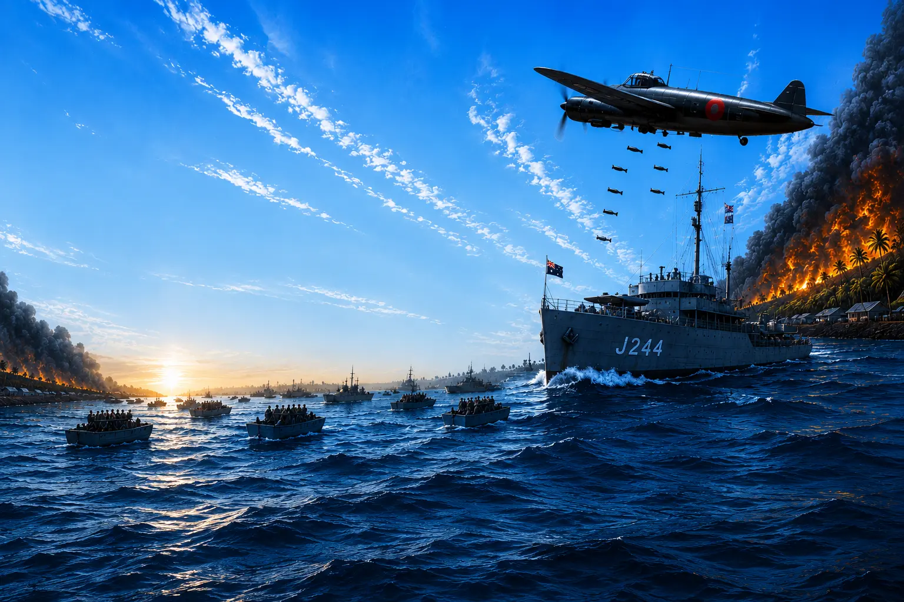

Our Veterans fought, gave their lives, and defended Australia.
19 February 2027 is the 85th anniversary of the bombing of Darwin. This is the first and largest wartime military attack on Australian soil, and a significant turning point in Australia's recent history.
At 9.58am on 19 February 1942, 188 Japanese aircraft swept over Darwin in the largest military attack on Australian soil since Federation. More planes were involved and more bombs were dropped in two air raids that day than on Pearl Harbor.
The bombings took place 10 weeks after Pearl Harbor and only 4 days after the British surrendered at the 'Fall of Singapore'.
Australia was preparing for an invasion attack. It moved soldiers to the top end, evacuated civilians, and prepared for the worst.
An attack was imminent. But it was not expected to be of this scale and magnitude.
"If we don't recognise our military history, no one will keep it going … and their sacrifice will be lost."— Capt. David Czerkies OAM, CStJ. President Merrylands RSL Sub Branch
The bombing of Darwin during WW2 is a military and cultural turning point for Australia.
Our Veterans fought on Australian soil. Civilian casualties were high. It was the first time Australian and US troops fought against a common enemy. Many Australian troops were deployed to Europe and mainland Australia was under attack.
Our Army, Airforce and Navy all suffered significant losses, but were not defeated.
The stories of the men and women who lived through the attacks on Australian soil during WW2 is largely unknown and being forgotten.
Our Veterans are heroes, and their stories should never be lost.
Darwin 1942 exists to capture those stories and share them with future generations of Australians.
"There is nothing bigger than paying the ultimate sacrifice, and that is giving your life, to defend the country that you call home"— Wayne Marr, CEO of Merrylands RSL Club
This is not just a film about military history. It's a film about identity, and the service and sacrifice that shaped Australia into the country it is today.
Darwin 1942 honours our Veterans and asks us to carry their legacy forward.